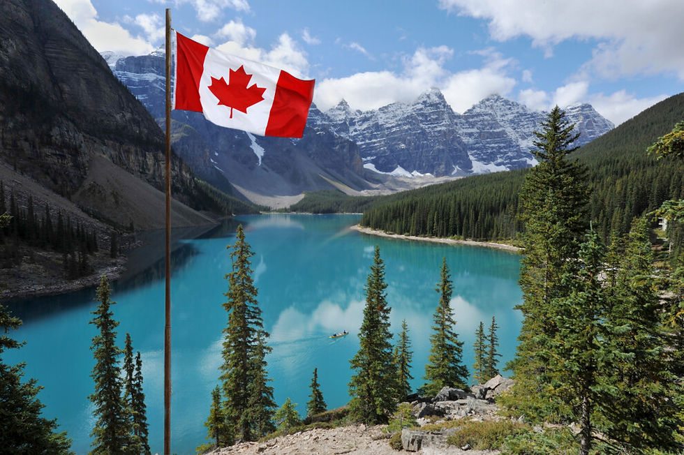
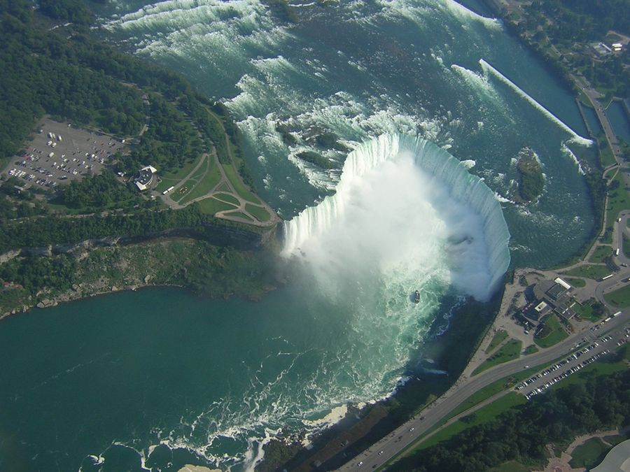
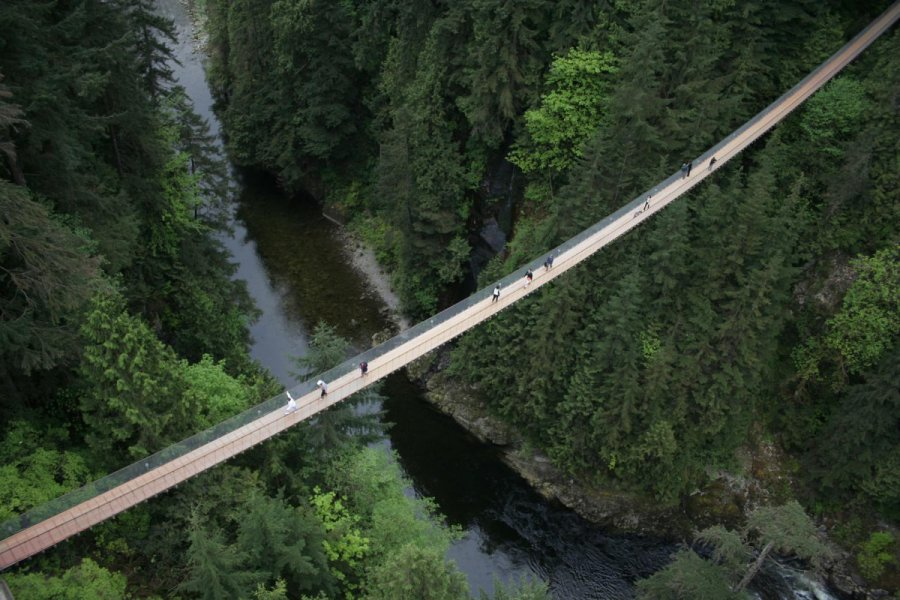
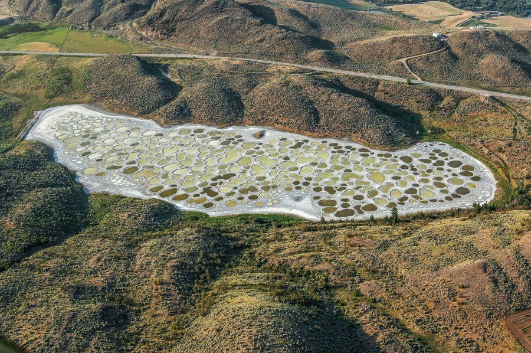

Канада
Канада — государство в Северной Америке, вторая по величине страна в мире после России. На юге и северо-западе граничит с Соединенными Штатами. На севере омывается Северным Ледовитым океаном, на северо-востоке — Баффиновым заливом и проливом Дейвиса, на востоке — Атлантическим океаном, на западе — Тихим океаном. К территории Канады относится большое количество островов, в том числе Баффинова Земля, Виктория, Элсмир, Девон, Банке, Ньюфаундленд и др.
Некоторые достопримечательности:
Ниагарский водопад является наиболее известным водопадом в мире и пожалуй одним из самых красивых. Он находится на реке Ниагара, расположенной на границе США и Канады, и, в переводе с языка индейцев ирокезов, означает "гремящая вода". И с американской, и с канадской стороны расположены одноименные городки Niagara Falls.
Первоначально построенный в 1889 году, висячий мост Капилано является одной из главных достопримечательностей Ванкувера, Канада. Местные жители и гости со всего мира наслаждаются трепетом пересечения 137-метрового колеблющегося моста, возвышающегося на 70 метров над рекой Капилано в Северном Ванкувере, провинции Британская Колумбия. С моста открывается великолепный вид на реку и вечнозеленый лес.
Пятнистое озеро Клилук, представляет собой необычно узорчатый водоем, расположенный между долинами Оканаган и Симилкамин в пустыне Британской Колумбии, Канада. Оно содержит большое количество сульфата магния, кальция, натрия, вместе с другими минералами и следами серебра и титана.
